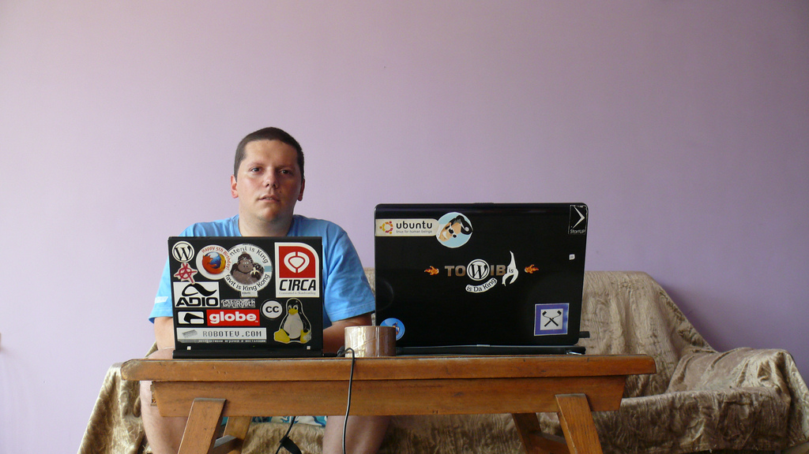
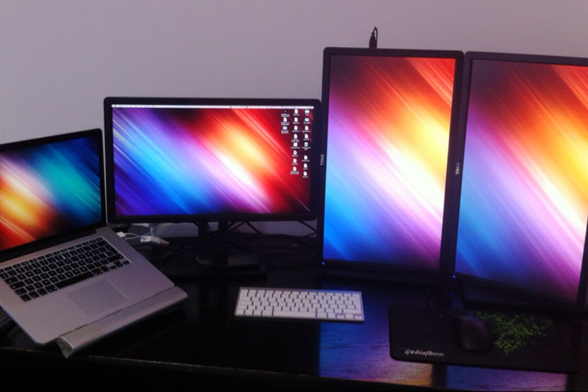
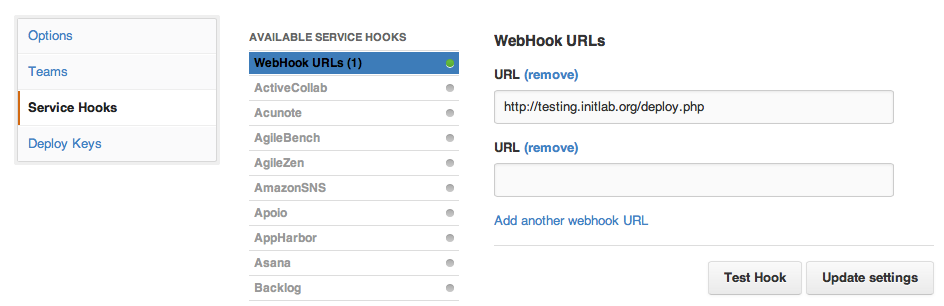

Your browser doesn't support the features required by impress.js, so you are presented with a simplified version of this presentation.
For the best experience please use the latest Chrome, Safari or Firefox browser.
Automation is keeping me sane
and lazy
За Лектора ...
Коко a.k.a Мързеливеца
- Project Manager (Ръководител проекти)
- Front End dev, Дизайнер
- Професионално мрънкало
- В УС на init Lab, Hackerspace в София
Ежедневие ...
- Редактирам документация
- Мъдря задачки за програмистите.
- Говоря много! (с колегите)
- Менажирам разраборване на няколко iOS неща
Ежедневие ...
- Сравнително много и различни проекти
- Различен начин и естество на работа
Ежедневие -> Лудница!
Автоматизация (personal) Workspace automation
Obligatory audience questions?
The point?!
Внимание: Луд Макаджия!

Щастливо мързелуване
- Увеличена производителност
- Предвидимо ниво на качеството
- Стриктно следване на установените процеси
- ...
Радо, няма безплатен обяд!
Отговорност и проблеми
- Време за поддръжка на автоматизацията
- Голяма начална инвестиция
- Непредвидими разходи за разработка
- Проблеми със сигурността
- ...
Automation
App launchers
App launcher
- Quicksilver
- Spotlight
- Alfred
Window Management
Window Management

Проблем?
Window Management
- Save windows states with different profiles
- Move windows to next/previous screen
- Move windows to exact screen
Photoshop
Photoshop
- Smart objects
- Layer compositions
- Scratch files
Configuration & Setup
Когато дизайнер чуе Shell/Terminal
Когато дизайнер чуе Shell/Terminal
dotfiles on GitHub
- Shell config
- Git config
- Vim config *
- Software installation & configuration scripts
Work in progress ...
lazywp-install
lazywp-install
$ lazywp-install portfolio
Virtual Host & Server configuration ...
--- hosts file updated.
--- vhost file created.
--- Apache restarted.
Virtual Host & Server configuration - Finished!
...
lazywp-install
...
Installing WordPress ...
--- MySQL server check passed: running
--- getting the latest WordPress and extracting files.
--- wp-content folder moved outside WordPress folder.
--- wp-config created.
--- index.php file created.
--- database & user created.
--- WordPress database install & admin user created.
--- default development theme created and activated.
WordPress installation & configuration - Finished!
lazywp-install
Спазване на добри практики
Пример: Разделяне на нашите файлове и системните файлове на WordPress, които подлежат на промяна
Idea time! Chaining
Easy project switching
Easy project switching
$ edit [project-name]
compass watchgit status- Open source in Editor of choice (MacVim)
- Open Safari, Chrome, Firefox
Update AllWordPress/Drupal projects
Update AllWordPress/Drupal projects
$ lazyupdate-wp
cd [wp folder 1]
wp core update
...
Deployment
Deployment
Качване на промени в GitHub
$ git commit -m "[commit message]"
...
$ git push
...
Deployment
Настройки в GitHub

Deployment
deploy.php
<?php
// Are we getting the 'payload' json data via POST request?
// If not it will terminate the script.
try
{
$payload = json_decode($_POST['payload']);
}
catch(Exception $e)
{
if($debug) { echo 'No payload data'; }
exit(0);
}
...
Deployment
deploy.php
...
// Save the current directory state
// change to the needed folder
$dir = getcwd();
chdir('[folder needed]');
// Check if there were any commits in the master branch
if ($payload->ref == 'refs/heads/master'){
exec('./deploy.sh 2>&1', $output);
}
// Get back to the original dir
chdir($dir);
?>
Deployment
deploy.sh
# go to the Git repository root
cd [some-folder]
# Get the latest changes from GitHub
git pull
# Remove compiled CSS files
rm css/*.css
# Recompile CSS from Sass files
compass compile --output-style compressed --force
# Any other build operations you might need
Deployment
В момента в който push'нете промени в master branch'а сайта ще се обнови автоматично.
Eдин светъл ден ...
1 команда за създаване на нов VM, който е конфигуриран за средата, проекта и програмиста.
Заключение
Ресурси
- Bash scripts
- http://github.com/kdankov/bash-scripts
- wp-cli
- http://wp-cli.org/
- Alfred 2
- http://www.alfredapp.com/
- Vim Configadvanced
- http://github.com/kdankov/vim
Благодаря за вниманието!
Въпроси?
Контакти
- Визитка
- http://dankov.name
- Блог на Български
- http://thelazyperson.org
- Twitter на Български
- @thelazyperson
- Блог на Английски
- http://tanstaafl.dankov.name
- Twitter на Английски
- @kdankov
- init Lab
- http://initlab.org